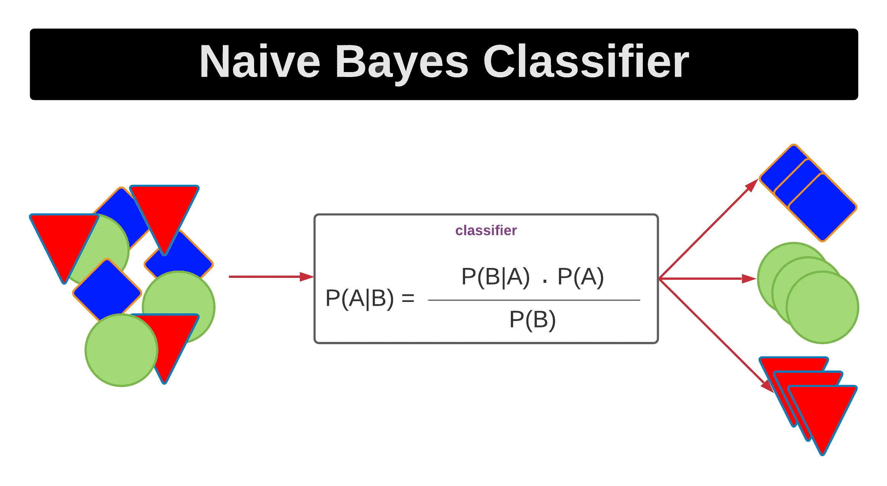
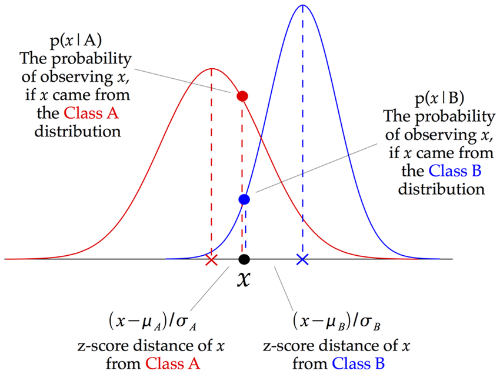
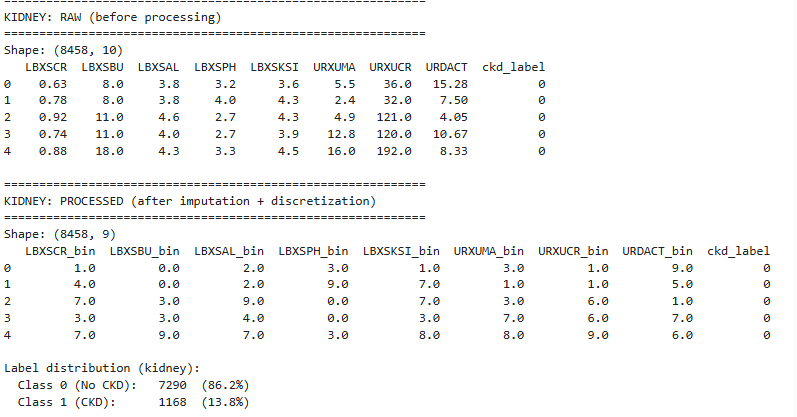
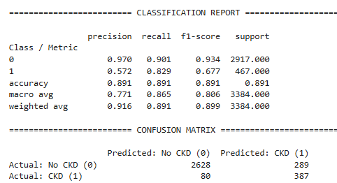
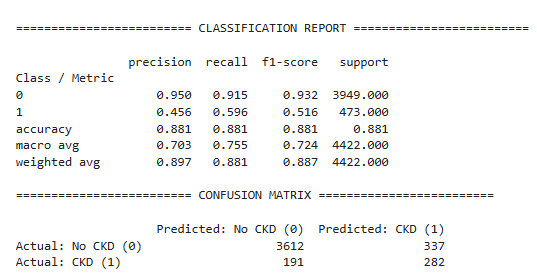
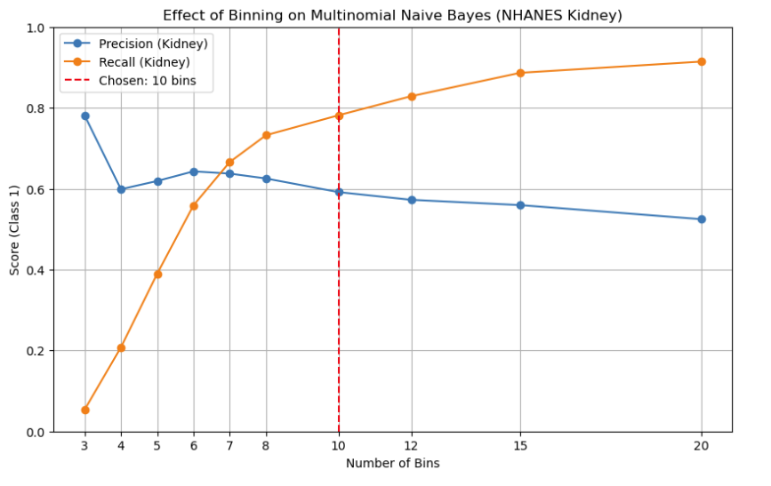
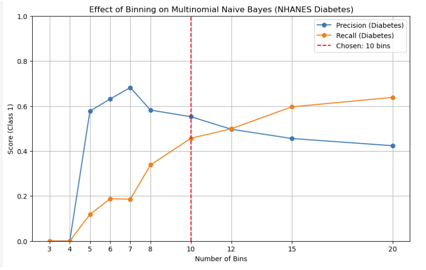

Naïve Bayes Classification
(a) Overview
Naive Bayes is a supervised learning method that utilizes conditional probabilities to classify a data point. An important assumption it makes is that all features are independent of one another, giving it the name “naive”. In real-world contexts, this is not necessarily a realistic assumption, as generally the probability of a feature does have some reliance on another feature. Despite collinearity within a dataset, there are methods of reducing this, such as using dimension reduction and feature selection, which reduce dependency within a dataset. This simplistic idea allows much faster predictions than other classification methods and is effective for high-dimensional data. Naive Bayes also makes other assumptions regarding the data: that all features have equal importance, and continuous features are normally distributed while discrete features have a multinomial distribution.
For this section, Multinomial Naive Bayes will be used, which focuses on the frequency of words within a dataset. It is designed for discrete data rather than continuous data and is commonly used in classification problems such as spam detection and document classification. Naive Bayes assumes these words are independent of one another and is learned by examining the frequency of each word within a certain class.
Binomial Naive Bayes is another method primarily designed for discrete data. Unlike Multinomial Bayes, which finds the frequency of features within a dataset, Binomial finds either the presence or absence of them. Binomial Naive Bayes views data points as binary, using conditional probability to calculate the likelihood a feature is present or not.
In this section of the project, a major question to be addressed is which biomarker patterns hold the strongest predictive power to distinguish between Chronic Kidney Disease and Type 2 Diabetes. To do this, the NHANES datasets for kidney conditions and diabetes were used. By analyzing the biomarker data, the model was evaluated to see how well it was able to predict if someone had developed CKD or diabetes.
Overview Images

Figure 1. Mastering Naive Bayes: A Comprehensive Python Guide to Probabilistic Classification - Medium

Figure 2. Mastering Naive Bayes: A Simple Yet Powerful Algorithm for Classification - Medium
(b) Data Preparation
Data preparation was a significant part of applying Naive Bayes, and a few challenges arose. In order to effectively use Multinomial Naive Bayes, there were several data requirements including no missing data, no negative data, and discrete-valued features. The identifier label “SEQN” was dropped to reduce noise within the model. The dataframe was then thoroughly checked for any missing values, as well as a check for negativity. In many NHANES datasets, valid inputs are applied, but act as placeholders for missing data (9999, 7777, etc.), and therefore this was also checked; however, none were found in the Kidney NHANES dataset. The Diabetes set, however, contained many default or imputed values, particularly LBDGLUSI (a default glucose value). The high number of repeats for this variable suggests this is not a fully continuous variable. For the diabetes dataset, discretization was found across multiple biomarkers, which can allow for more compatibility with Naive Bayes, but it could potentially cause bias depending on how discretization reflects real world biological variation.
The data preparation tells us that these datasets differ in several ways. The kidney dataset has more natural biological indicators, while the diabetes one is more compressed, with several variables having a high number of repeats. Another important discrepancy between the two is that the kidney dataset does represent more continuous data, which will be kept in mind during the implementation of Naive Bayes. The distribution of the data was also checked, with both datasets showing heavy imbalance towards the healthy class (class 0). The kidney data set was 86.2% in class 0 (no CKD), and diabetes had 89.3% in class 0 (no diabetes). This is important insight, as the model will naturally favor class 0, and accuracy could be skewed and predicting this class is likely to be correct. Recall for class 1, detecting the condition, will be the key metric.
Training and Testing Split
When splitting the data, it used a split of 60% training and 40% evaluation with stratification on the label. Stratification was an important step, especially because the data has significantly more points within the healthy class. Without it, one split could potentially have too much or too little of those in the diagnosed class. The training set is what the model uses to learn, which allows a meaningful application when the model uses data it is unfamiliar with. The training and testing data must be disjoint, as it ensures the model remains unfamiliar with the testing data and shows more accurate results for the model's performance. After the split, the feature was transformed using quantile based binning. Binning was needed as Multinomial Naive Bayes requires discrete inputs .A separate plot using a copy of the dataframe was made to evaluate the impact of discretization (set by the number of bins) on precision and recall, in order to find the most preferred tradeoff.
Dataset Links
Kidney: nhanes_kidney_cleaned.csv
Diabetes: nhanes_diabetes_cleaned.csv
Cardiovascular: framingham_cleaned.csv
Data Prep Example for NHANES Kidney

Figure 1. Example of raw dataset before preprocessing and after.
(c) Code
The Naïve Bayes models were implemented in Python using scikit-learn. The workflow includes splitting the dataset, applying KBinsDiscretizer for feature binning, training a MultinomialNB classifier, and evaluating predictions using precision, recall, confusion matrices, and classification reports.
The key parameter explored in this project is the number of bins used during discretization, which directly affects model performance by changing how continuous biomarker distributions are represented.
(d) Results
Model performance was evaluated using precision, recall, accuracy, and confusion matrices. Because the datasets are imbalanced, recall for the positive class (disease presence) is especially important, since false negatives represent missed diagnoses. Precision measures how many predicted positives are accurate, while recall measures the number of positives actually found. In this model, accuracy is a misleading metric because of the imbalance in classes. To effectively evaluate the model, recall and precision are more important metrics, especially because of how they highlight the discrepancy within the dataset and the tradeoff between the two.
Kidney Classification Results

Figure 3. Confusion matrix for NHANES kidney classification using Multinomial Naïve Bayes.
The model is intending to predict and classify if a datapoint will be in class 0 (no CKD) or class 1 (disease). The confusion matrix does well at correctly identifying non-disease cases, which is supported by the large number of true negatives in comparison to false ones. This was expected, given that a large majority of cases in the dataset were healthy, so it was likely the model was going to favor this class. However, false negatives are the most dangerous group. This model has a false negative rate of about 2.9%, which may be too high to be valid in a real- clinical setting. Where the model performs poorly, is overestimating the number of positives. The proportion of false positives is nearly 42%. This will be discussed more so below, but this is primarily because the model prioritizes recall over precision.
Diabetes Classification Results

Figure 4. Confusion matrix for NHANES diabetes classification using Multinomial Naïve Bayes.
The classification matrix for NHANES diabetes shows similar results as that of the kidney dataset model. However, ithad worse precision and recall overall compared to the Kidney classification. Both classification models do show expected results, as the significantly higher number of healthy patients compared to diagnosed patient means finding the healthy patients is fairly easy, but the model is also much more likely to overestimate the number of positive cases. This again emphasizes the decision to focus more so on reducing false negatives over reducing false positives.
Effect of Binning (Hyperparameter Analysis)
The number of bins used in discretization significantly affects model performance. Too few bins oversimplify the data, while too many bins introduce sparsity and reduce generalization.
Kidney: Precision vs Recall Across Bins

Figure 5. Effect of bin size on precision and recall for kidney disease classification.
Diabetes: Precision vs Recall Across Bins

Figure 6. Effect of bin size on precision and recall for diabetes classification.
(e) Conclusions
Multinomial bayes was applied to the kidney and diabetes datasetsin order to evaluate modeling capabilites of predicting diagnoses. The method allowed for trasnparent assignmnets of classes, by examining probabilities based off of fetaure likelihoods. The goal of this section was ot asses whether the biomarker profile of CD-positive and diabetes-positive respondents are statistically distnct from those who are healthy, without assuming complex feature interactions.
The class distribution was heavily imbalanced, with the mmajority of respondents from both datasets being in the healthy class. Because of this, both models displayed similar behaviors; correctly identifying the majority of positive cases, but incorrectly assigning false positives as well. Due to this imbalance, the tradeoff between recall and precision was expected, requiring a decision to be made about which to focus on. In a clinical setting, false positives (possibly unnecessary treatment) are less likely to have detrimental consequences than false negatives (no necessary treatements given), though with exceptions. As such, binning was examined to maximize recall as much as possible without completely disregard for precision.
Taken together, the two Naive Bayes models provide evidence relevant to both tiers of the proposed pathway. The kidney model demonstrates that the NHANES biomarker profiles of CKD-positive respondents are statistically distinguishable from healthy respondents at 0.83 recall. This supports that renal function decline leaves a detectable signature in certain lab values. The diabetes model, despite its data limitations, achieves 0.60 recall for diabetic respondents using markers that include both glycemic indicators and lipid variables (LBXTC, LBDLDL, LBXTR) that overlap with cardiovascular risk profiles. This overlap is itself informative: diabetic respondents in NHANES show co-elevated lipid and glycemic markers, which is consistent with the metabolic syndrome cascade that precedes both CKD and cardiovascular disease.